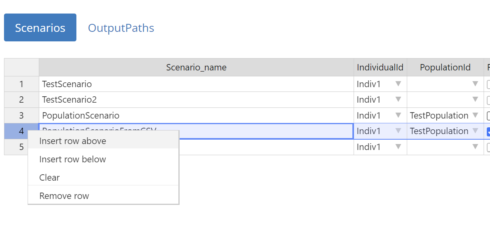
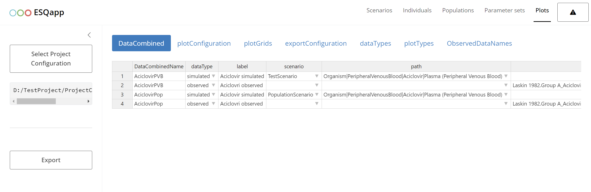
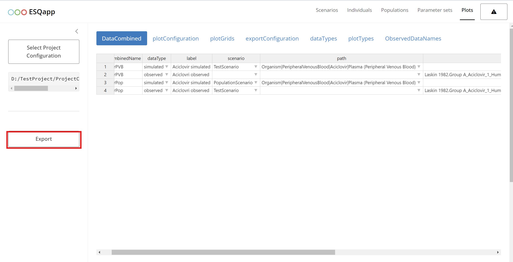

Introduction
ESQapp is a graphical user interface (GUI) for working
with the projects implemented in the {esqlabsR}
package.
Opening the project
ESQapp operates with the projects by loading a valid
ProjectConfiguration
file. In this example, we will use an example project created by
executing
Start the app by calling
ESQapp::run_app()
Click on “Select Project Configuration” and select the
ProjectConfiguration.xlsx file of your project. The app
will load the project and show the contents of the scenario definitions,
individuals, populations, and plots.

Design Scenarios
You can browse, edit, add new, or remove existing scenarios. To edit
a field, e.g., Scenario_name, double-click on it. To remove
a scenario or add a new one, right-click on a row and select “Insert” or
“Remove row”.

Scenarios with duplicate names are highlighted in red, as eachScenario_name must be unique.

The main properties that can be defined for a scenario are:
-
The
IndividualIdcolumn specifies the individual for a scenario.
This column shows a drop-down list with all individuals defined in the Individuals tab. To unassign an individual from a scenario:- Right-click on the cell and select Clear,
- Press the Backspace key on your keyboard, or
- Select
--NONE--option in the drop-down list.
-
The population is specified for a scenario in the column
PopulationId, which shows a drop-down list with all populations defined in the Populations tab. To unassign a population from a scenario:- Right-click on the cell and select Clear,
- Press the Backspace key on your keyboard, or
- Select
--NONE--option in the drop-down list.
To edit the simulation time of a scenario, double-click on the
SimulationTimecell. This will open a modal window where you can
configure the output intervals of the simulation.
In this window, you can add, remove, or edit intervals. For each
interval, you can define the start and end time, the unit, and the
resolution.
Since the original Excel structure does not allow mixing different time
units within the output interval definition, all values are
automatically converted to a target unit. The target unit is taken
from the first unit cell of the table and is stored in the read-only
columnSimulationTimeUnit.Parameter sets are defined in the
Parameter setscolumn.
When you double-click on a cell in this column, a list of parameter sets
(from the Parameter sets tab) is displayed. You can then select the
desired parameters and arrange their order to include them in the scenario.
-
The applications is specified for a scenario in the column
ApplicationProtocol, which shows a drop-down list with all applications defined in the Applications tab. To unassign a application protocol from a scenario:- Right-click on the cell and select Clear,
- Press the Backspace key on your keyboard, or
- Select
--NONE--option in the drop-down list.
Output paths are defined in the column
OutputPathsIds. When double-clicking on a cell, a list of output paths defined in theOutputPathstab is presented and the user can select the paths that should be added to the scenario.

Individuals
The individuals assigned to the scenarios must be specified in the
Individuals tab. To add a new invidividual, right-click on
an existing entry and select “Isert row below”. After entering the name
of the individual, a new individual parameters sheet is added.

To map a protein to ontogeny, define a new
protein–ontogeny
relationship, or edit an existing one, double-click theProtein Ontogenies cell. This will open a modal window for
managing
the mapping.

Populations
Populations are defined in the Populations tab. To
map a protein to ontogeny, define a new
protein–ontogeny
relationship, or edit an existing one, double-click theProtein Ontogenies cell. This will open a modal window for
managing
the mapping.


Plot Results
Definition of the figures within the esqlabsR Plotting Workflow is supported by the
ESQapp in the tab Plots.

The DataCombined tab defines the mappings between
simulation results
and observer data. In this tab, the app allows you to select
scenarios
(from the Scenarios tab) and output paths (from
theScenarios|OutputPaths list).
To load observed data, click the Load Observed Data
button. This
opens a modal window displaying the available observed sheet(s). You
can
select the sheet(s) to load by marking the corresponding checkboxes.

Once loaded, the names of the observed sheets become available as a
list
in the drop-down of the dataSet column. By right-clicking
on a cell in
the dataSet column, you can access a context menu with the
option
Show metadata.
 Selecting this option
opens a modal window with a
Selecting this option
opens a modal window with a
metadata table. This table is read-only and available only for
previously loaded observed data.

Applying the changes
WARNING: Closing the app without saving will loose all
changes made to the configurations!
After editing the scenarios, plots, or other configurations, the changes must be saved by clicking on the “Export” button.

The changes will be written into the Excel files. Of course, you can still manually edit the Excel files.